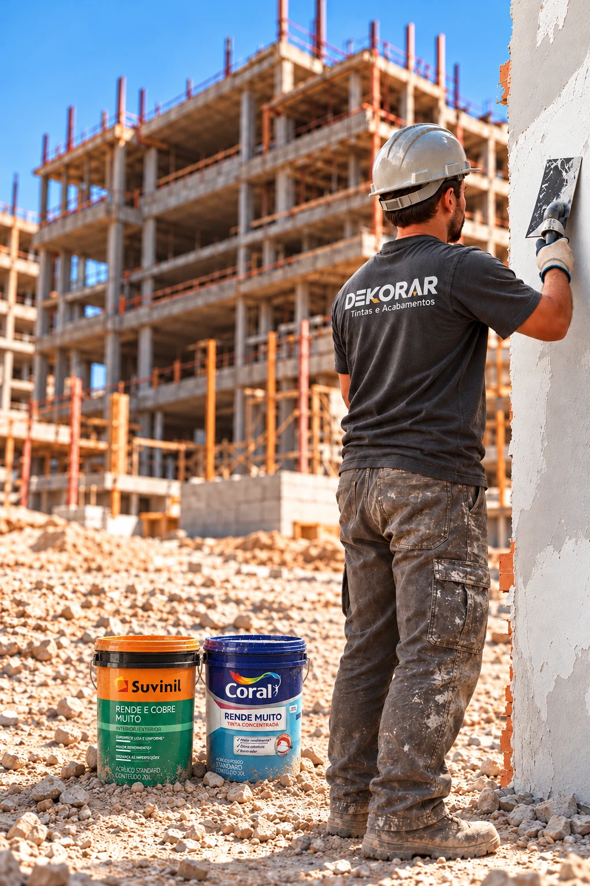
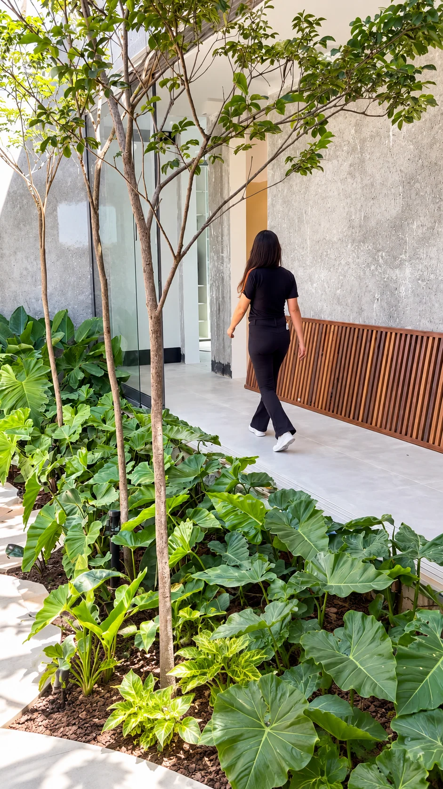
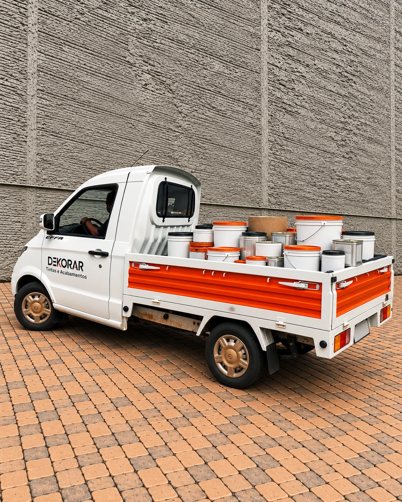
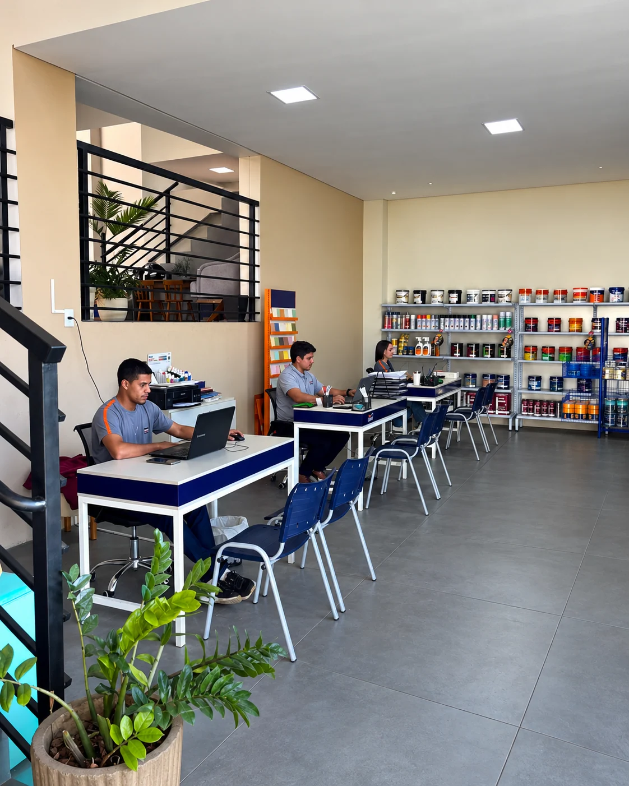

LavrasAv. Dr. Francisco Martins de Andrade, 91
Bairro Ouro Preto
Abrir no mapa →Bairro Ouro Preto

Produtos apresentados pela Dekorar para tratar, preparar, proteger e transformar cada superfície.

A equipe Dekorar acompanha projetos de perto para indicar os materiais adequados a cada etapa e tipo de acabamento.

A Dekorar organiza a entrega de tintas, massas, revestimentos e itens de acabamento em Lavras, Três Corações e cidades próximas. Consulte a área atendida, o prazo e a disponibilidade com a equipe.
